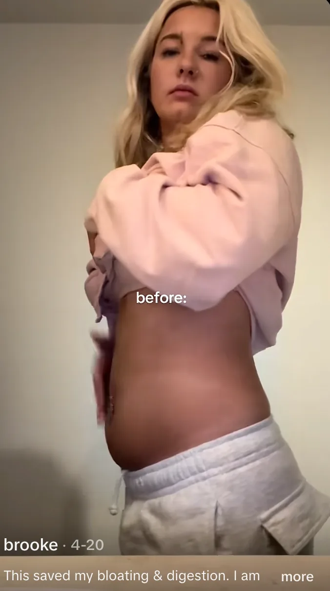
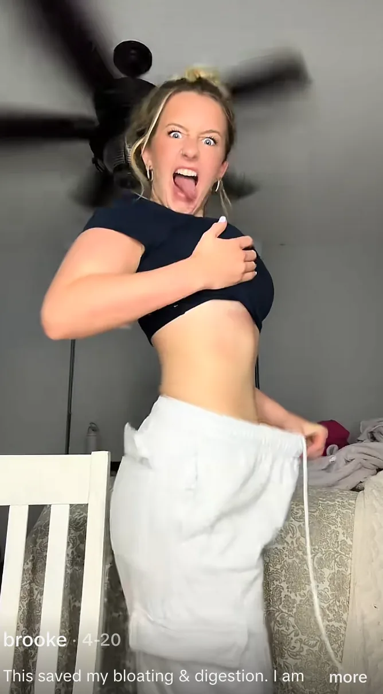
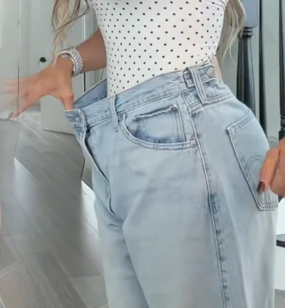
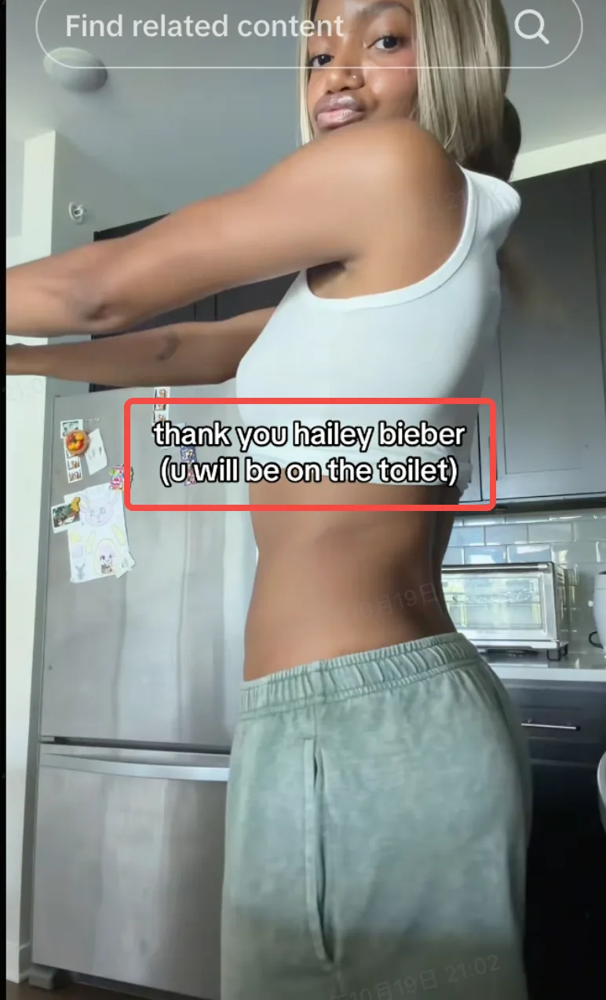

Crea los tres videos sugeridosPlease create all three suggested videos
Revelado de resultado antes/después · Reseña de producto con psicología inversa · Concepto con descuento primero. Para videos adicionales, elige los formatos opcionales de abajo o propón tu propia idea a nuestro equipo para confirmarla antes de grabar.Before-and-After Result Reveal · Reverse-Psychology Product Review · Discount-First Concept. For additional videos, choose from Optional Formats below or pitch your own idea to our team for confirmation before filming.
Revelado de resultado antes/despuésBefore-and-After Result Reveal
Abre con una imagen clara y personal de antes/después, luego comparte tu experiencia con Daily Fiber Mix y cómo encaja en tu rutina.Open with a clear, personal before-and-after visual, then share your experience with Daily Fiber Mix and how it fits into your routine.
Abre con una imagen clara y personal de antes/después, luego usa una referencia breve al entrenador de celebridades para introducir el ángulo de la fibra (Elige una muestra para recrearla).Open with a clear, personal before-and-after visual, then use a short celebrity-trainer reference to introduce the fiber angle (Pick one sample to recreate it ).
Más opciones de texto en pantallaMore on-screen text options ›




- Comparte una experiencia personal o un punto de dolor. Menciona la hinchazón, una sensación pesada, la irregularidad u otra experiencia que encaje con el ángulo elegido. Las imágenes del punto de dolor son opcionales.Share a personal experience or pain point. Mention bloating, a heavy feeling, irregularity, or another experience that fits your chosen angle. Pain-point images are optional.
- Presenta Daily Fiber Mix. Cada stick tiene 6 g de fibra (unas 20 frambuesas) y fibra prebiótica para apoyar la bacteria intestinal, las evacuaciones regulares, menos hinchazón y un vientre de aspecto más plano.Introduce Daily Fiber Mix. Each stick has 6g of fiber (about 20 raspberries) and prebiotic fiber to support gut bacteria, regular bowel movements, less bloating, and a flatter-looking stomach.
- Muestra un visual relevante del producto. Mezclalo en una bebida o comida que ya disfrutes. El material del demo de absorción de aceite está disponible y se puede incluir si encaja de forma natural.Show a relevant product visual. Stir it into a drink or food you already enjoy. The oil-absorption demo footage is provided and can be included if it fits naturally.
Reseña de producto con psicología inversaReverse-Psychology Product Review
Abre con una advertencia juguetona o una queja simulada, luego revela tu experiencia honesta con Daily Fiber Mix. Después comparte su sabor, textura, comodidad y los beneficios personales que has notado.Open with a playful warning or mock complaint, then reveal your honest experience with Daily Fiber Mix. Then share its taste, texture, convenience, and the personal benefits you've noticed.
Usa una advertencia juguetona o queja simulada, luego revela la sencilla rutina de fibra detrás de tu video (Elige una para usar):Use a playful warning or mock complaint, then reveal the simple fiber routine behind your video (Pick one to use):
Más hooks de psicología inversaMore reverse-psychology hooks ›
- Comparte una experiencia personal o un punto de dolor. Menciona la hinchazón, una sensación pesada, la irregularidad u otra experiencia que encaje con el ángulo elegido. Las imágenes del punto de dolor son opcionales.Share a personal experience or pain point. Mention bloating, a heavy feeling, irregularity, or another experience that fits your chosen angle. Pain-point images are optional.
- Presenta Daily Fiber Mix. Cada stick tiene 6 g de fibra (unas 20 frambuesas) y fibra prebiótica para apoyar la bacteria intestinal, las evacuaciones regulares, menos hinchazón y un vientre de aspecto más plano.Introduce Daily Fiber Mix. Each stick has 6g of fiber (about 20 raspberries) and prebiotic fiber to support gut bacteria, regular bowel movements, less bloating, and a flatter-looking stomach.
- Muestra un visual relevante del producto. Mezclalo en una bebida o comida que ya disfrutes. El material del demo de absorción de aceite está disponible y se puede incluir si encaja de forma natural.Show a relevant product visual. Stir it into a drink or food you already enjoy. The oil-absorption demo footage is provided and can be included if it fits naturally.
Concepto con descuento primeroDiscount-First Concept
Abre con la oferta de Black Friday, luego muestra el producto y explica qué incluye la oferta.Open with the Black Friday offer, then show the product and explain what comes with the deal.
Empieza con la oferta de Black Friday, luego muestra el producto y explica qué incluye la oferta (Elige una para usar):Lead with the Black Friday offer, then show the product and explain what comes with the deal (Pick one to use):
Más hooks con descuento primeroMore discount-first hooks ›
- Comparte una experiencia personal o un punto de dolor. Menciona la hinchazón, una sensación pesada, la irregularidad u otra experiencia que encaje con el ángulo elegido. Las imágenes del punto de dolor son opcionales.Share a personal experience or pain point. Mention bloating, a heavy feeling, irregularity, or another experience that fits your chosen angle. Pain-point images are optional.
- Presenta Daily Fiber Mix. Cada stick tiene 6 g de fibra (unas 20 frambuesas) y fibra prebiótica para apoyar la bacteria intestinal, las evacuaciones regulares, menos hinchazón y un vientre de aspecto más plano.Introduce Daily Fiber Mix. Each stick has 6g of fiber (about 20 raspberries) and prebiotic fiber to support gut bacteria, regular bowel movements, less bloating, and a flatter-looking stomach.
- Muestra un visual relevante del producto. Mezclalo en una bebida o comida que ya disfrutes. El material del demo de absorción de aceite está disponible y se puede incluir si encaja de forma natural.Show a relevant product visual. Stir it into a drink or food you already enjoy. The oil-absorption demo footage is provided and can be included if it fits naturally.
Formatos opcionalesOptional Formats
- Video de reacción — Dueto / Stitch — Reacciona a una tendencia de fibra, una recomendación de entrenador de celebridades o una conversación sobre salud intestinal, luego comparte tu perspectiva y presenta Daily Fiber Mix.Reaction Video — Duet / Stitch — React to a fiber trend, celebrity-trainer recommendation, or gut-health conversation, then share your perspective and introduce Daily Fiber Mix.
- Rutina diaria de café / GRWM — Muestra cómo mezclas Daily Fiber Mix en una bebida que ya forma parte de tu rutina diaria.Everyday Coffee Routine / GRWM — Show how you mix Daily Fiber Mix into a drink that's already part of your daily routine.
- Ángulo de cultura pop y regalo de temporada — Vincula el video a un momento relevante de la cultura pop o una ocasión estacional. Para Acción de Gracias o Navidad, también puedes presentar Daily Fiber Mix como un regalo de bienestar considerado para alguien que quiera una forma fácil de añadir fibra a su rutina.Pop-Culture & Seasonal Gift Angle — Tie the video to a relevant pop-culture moment or seasonal occasion. For Thanksgiving or Christmas, you can also present Daily Fiber Mix as a thoughtful wellness gift for someone who wants an easy way to add fiber to their routine.
- Comparación de ingredientes — Compara los ingredientes o el formato de Daily Fiber Mix con otros tipos de productos de fibra, manteniendo la comparación precisa y basada en información verificable.Ingredient Comparison — Compare Daily Fiber Mix's ingredients or format with other types of fiber products, keeping the comparison accurate and based on verifiable information.
- Desglose del punto de dolor — Habla de una preocupación cercana, como la hinchazón o la irregularidad, y explica cómo añadir fibra puede encajar en tu rutina.Pain-Point Breakdown — Talk through a relatable concern, such as bloating or irregularity, and explain how adding fiber can fit into your routine.
- Sketch de doble personaje — Interpreta dos versiones de ti mismo para mostrar una conversación cercana sobre la fibra, la hinchazón o cómo encontrar una rutina sencilla.Dual-Character Skit — Play two versions of yourself to show a relatable conversation about fiber, bloating, or finding an easy routine.
No todo video necesita seguir la misma secuencia exacta. Mantén claros el producto, la oferta y el CTA.Not every video needs to follow the exact same sequence. Keep the product, offer, and CTA clear.